{kind=link}
Fordele ved lejligheden
- Dele-venlig
- Gratis parkering
- Ikke-ryger
- Byens bedste udsigt
- Øverste etage (ingen overboer der tramper i gulvet)
- Ejerforening med meget sund økonomi
- Nyt tag og vinduer i 2011
- Toilet, håndvask og bruser udskiftet i 2014
- Flotte lyse trægulve
- Hyggelige skråvægge som indrammer rummene
- Masser af opbevaringsplads
- Hurtig overtagelse allerede 15. juli 2015
- Fik vi sagt at udsigten var god? :)
Økonomi
- Pris: 1.725.000,- DKK
- Udbetaling: 90.000,- DKK
- Pris/m2: 26.538,- DKK
- Månedlig ydelse brutto: 7.582,- DKK
- Månedlig ydelse netto: 6.061,- DKK
- Fællesudgifter: 1.000,- DKK / måned.
Beskrivelse og billeder
Området
Det her er den perfekte lejlighed til det unge par eller de to bedste venner/veninder, som skal starte på universitetet i dejlige Århus. Der er mindre end 500 meter til Nobelparken og knap 1 km til Handelshøjskolen. Hopper du på cyklen kan du være ved åen i løbet af ti minutter, og en spytklat fra lejligheden ligger Storcenter Nord med et væld af shoppingmuligheder. Derudover går bus 5A lige til døren og Fitness World og Fresh Fitness ligger lige på den anden side af vejen.
{kind=link}
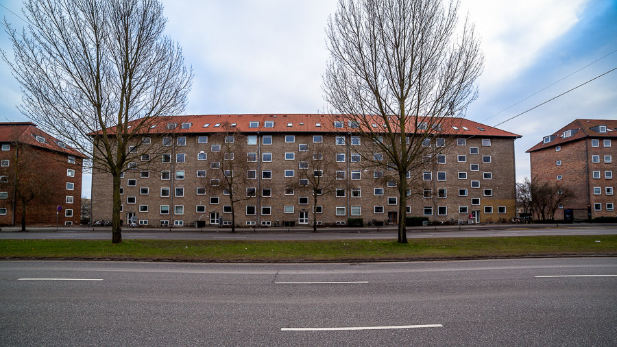
Bygningen set fra Ringgaden.
{kind=link}
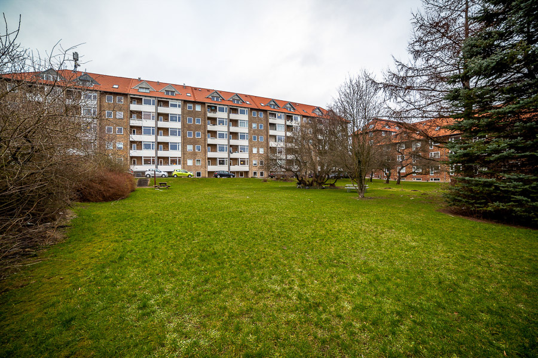
Bygningen set fra haven (og haven er til fri afbenyttelse).
{kind=link}
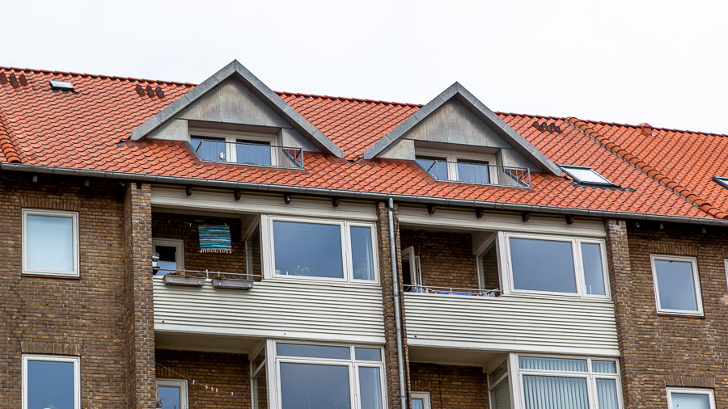
Kvisten til venstre er denne lejlighed.
Lejligheden
Lejligheden ligger på femte sal – og ja – der er mange trapper – helt præcist 85 trin – men de er det hele værd – bare vent til du ser lejligheden! Og så får du spændstige baller og lår med helt gratis!
Lejligheden har både været brugt som delelejlighed og parlejlighed – og den har fungeret fremragende som begge dele.
Lejligheden har sin helt egen charme og fremstår lys og indbydende med lyse vægge, lofter og gulve – og efter en klat maling, er den lige til at flytte ind i!
Gang
Når du åbner døren til lejligheden kommer du ind i en fin lille fordelingsgang, hvorfra du har adgang til alle rum. Der er opbevaring i form af et indbygget skab og en praktisk hylde over døren.
{kind=link}
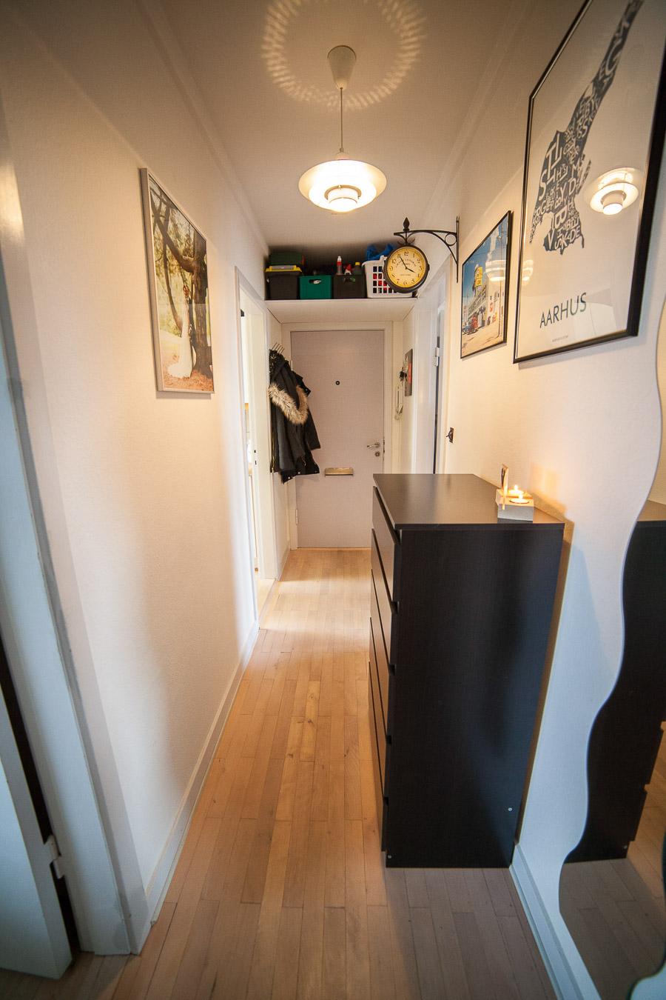
Fordelingsgangen. Døren for enden er hoveddøren, og billedet er taget henne fra badeværelset. Der er god opbevaring over døren, og derudover er der et indbygget skab i gangen.
Køkken
Køkkenet er i klassisk 90’er design med linoleumsgulv, rigeligt skabsplads, fint keramisk komfur og opvaskemaskine – som er en nyere en af slagsen. Også emhætten og vandhanen er skiftet for nylig. Køkkenet er flot indrammet af de skrå vægge og har små finurlige hylder til krydderier og andet opbevaring, samt en spiseplads til 2-3 personer, som er omkredset af en hyggelig træbeklædning. Køkkenet får masser af lys fra det store skråvindue.
{kind=link}
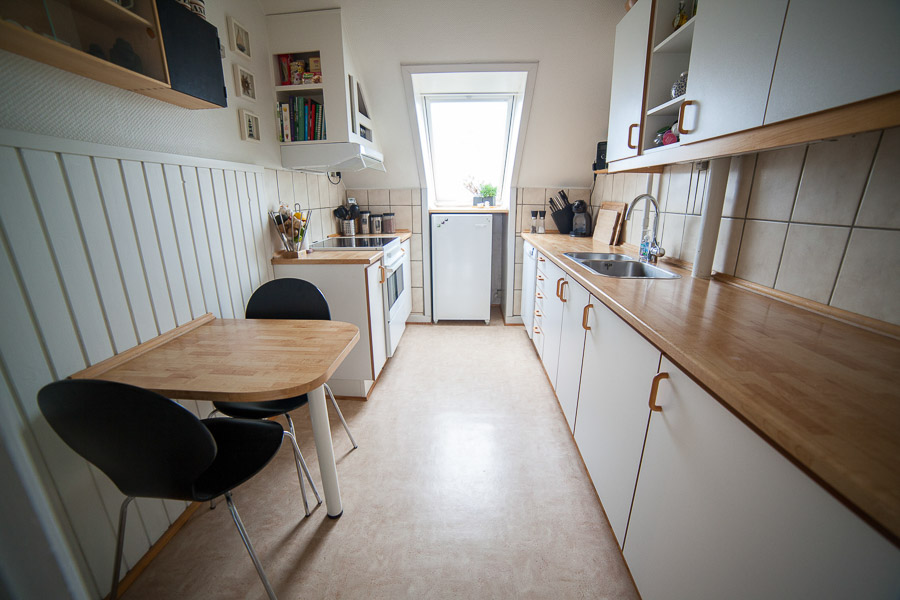
Det skønne køkken med køle/fryseskab, komfur, opvaskemaskine, rigeligt med skabsplads og spiseplads til 2-3 personer.
{kind=link}
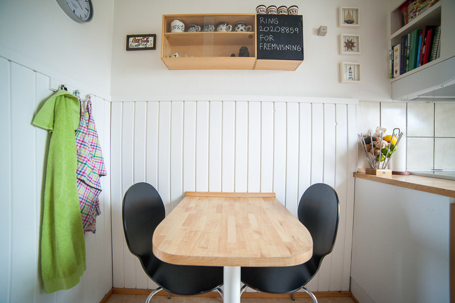
Spisepladsen er omkranset af hyggeligt træ.
{kind=link}
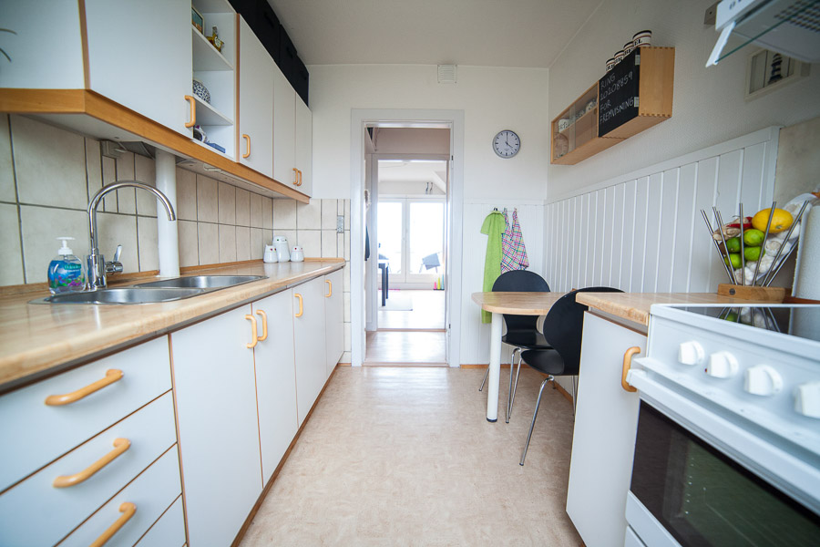
Vandhanen, emhætten og opvaskemaskinen er nyligt skiftet.
{kind=link}
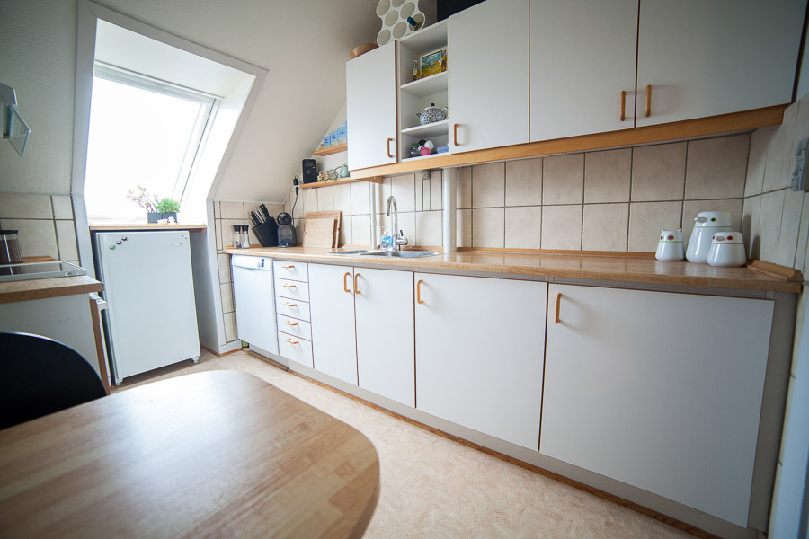
Skråvinduet i enden af køkkenet sender dejligt lys ind. Derudover er der lys under skabene samt en lampe i loftet.
{kind=link}
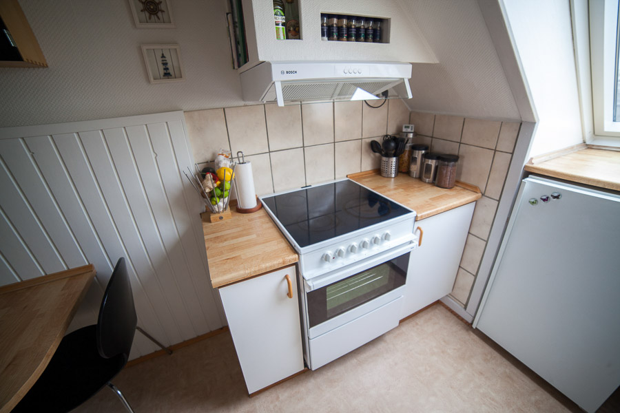
Over komfuret er der hyggelige hylder integreret med skråvæg og emhætte.
Værelse
Soveværelset (eller det ene værelse) rummer også hyggelige skråvægge og et stort vindue, som lukker masser af lys ind, samt giver en flot udsigt udover den nordlige og vestlige del af byen.
{kind=link}
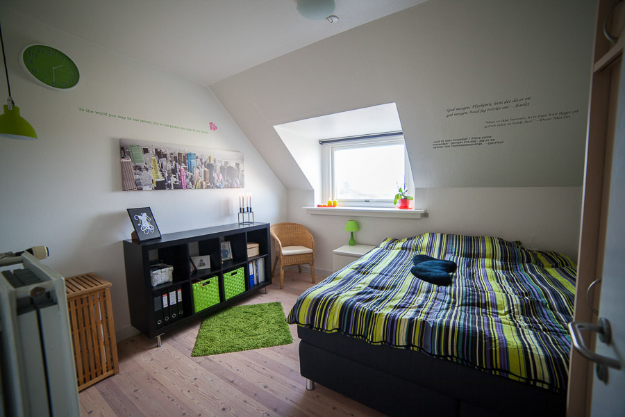
I soveværelset er der et stort vindue der bringer masser af lys ind i rummet.
{kind=link}
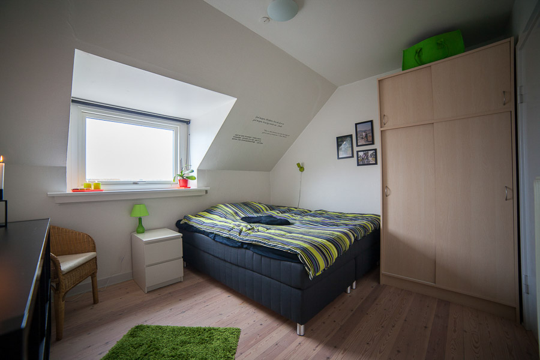
I soveværelset er der plads til en god stor seng.
{kind=link}
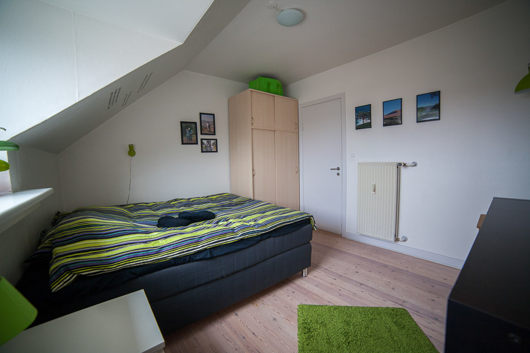
De skrå vægge indrammer rummet og skaber en hyggelig stemning.
Badeværelse
For enden af gangen findes badeværelset, som sidste år blev udstyret med nyt armatur, vask, skabe og toilet. Der er en god bruseniche, og der er fint tryk på vandet selvom man er oppe i højderne. Der er skab over toilettet og skab under vasken, så også her god mulighed for opbevaring.
{kind=link}
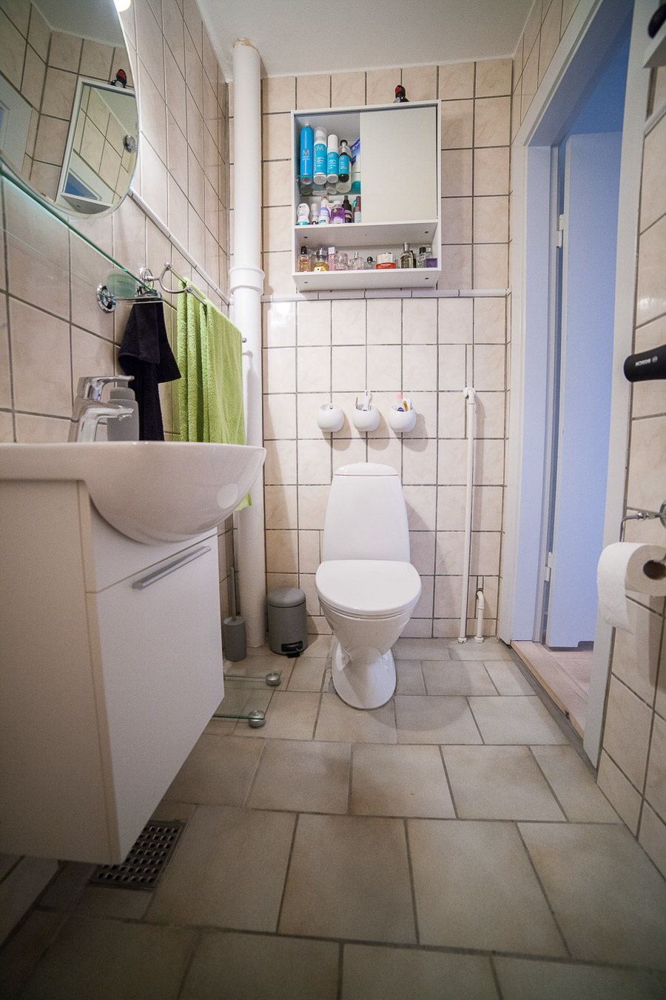
Badeværelset er rummeligt og har fået nyt toilet, håndvask, skabe og armaturer i 2014.
{kind=link}
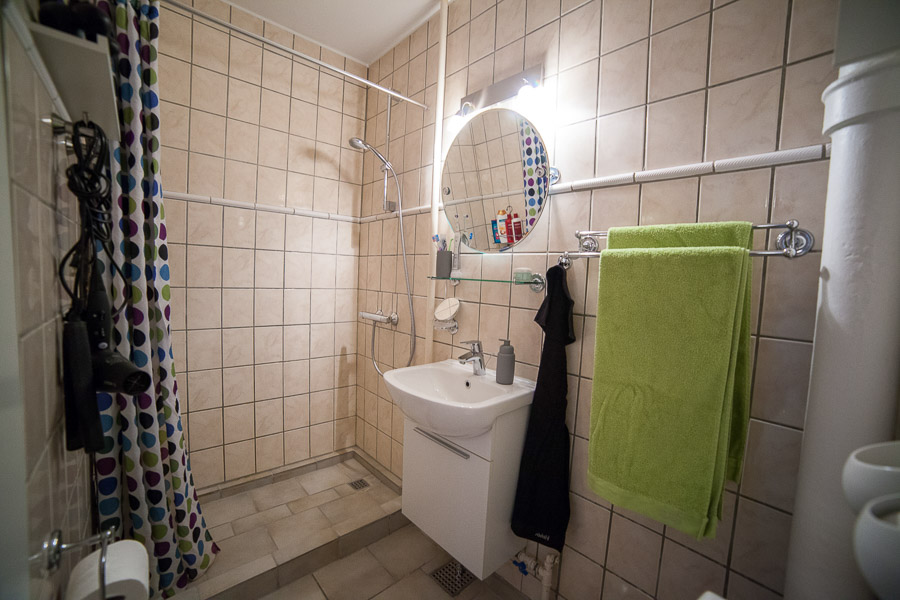
Der er en god stor bruseniche som man kan boltre sig i.
{kind=link}
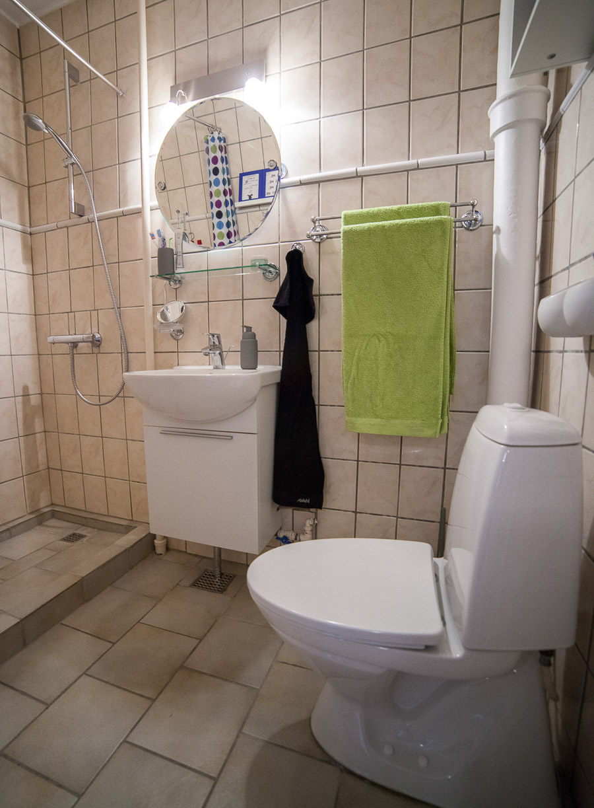
Fint spejl, glashylde, lampe, håndklædeholder, toiletrulleholder og knage følger med i handlen.
Stuen
Det sidste rum er stuen (eller det andet værelse), som er ca. dobbelt så stort som det andet. Også her er der skråvægge, som indkredser og skaber rummet. Der er god plads til spisebord og stole, samt hyggekrog med chaiselongsofa og TV. Der er en fin vinkel i stuen, som er ideel til enten kontorplads eller en god stor reol. I stuen er der også et indbygget skab.
{kind=link}
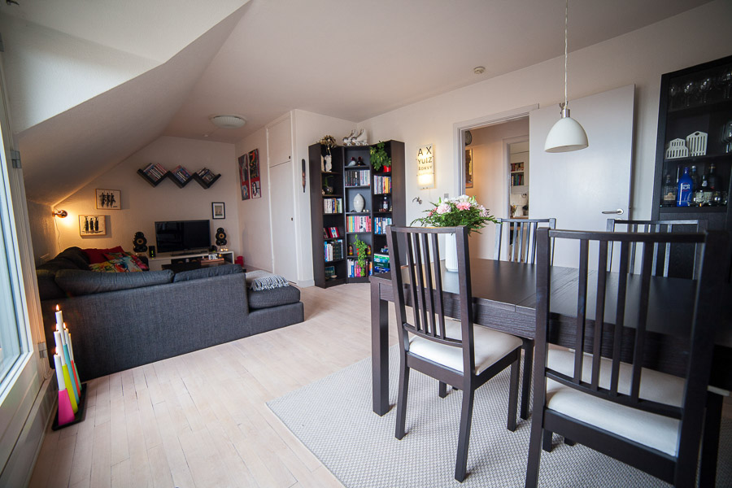
Stor og rummelig stue med godt lysindfald fra altandøren (alle vinduer og altandør er skiftet i 2011).
{kind=link}
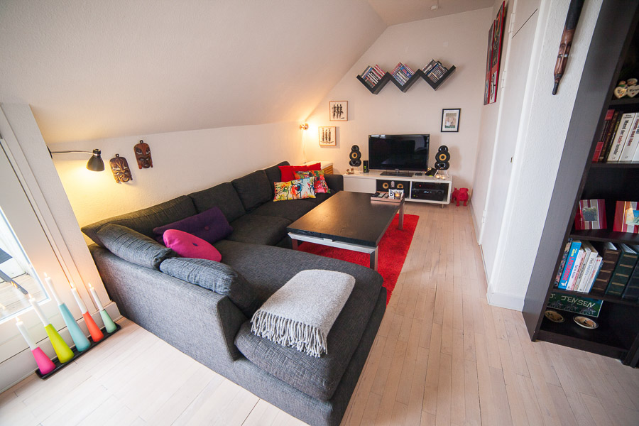
Rummet er ideelt til at skabe en hyggekrog med stor sofa og fjernsyn for enden.
{kind=link}
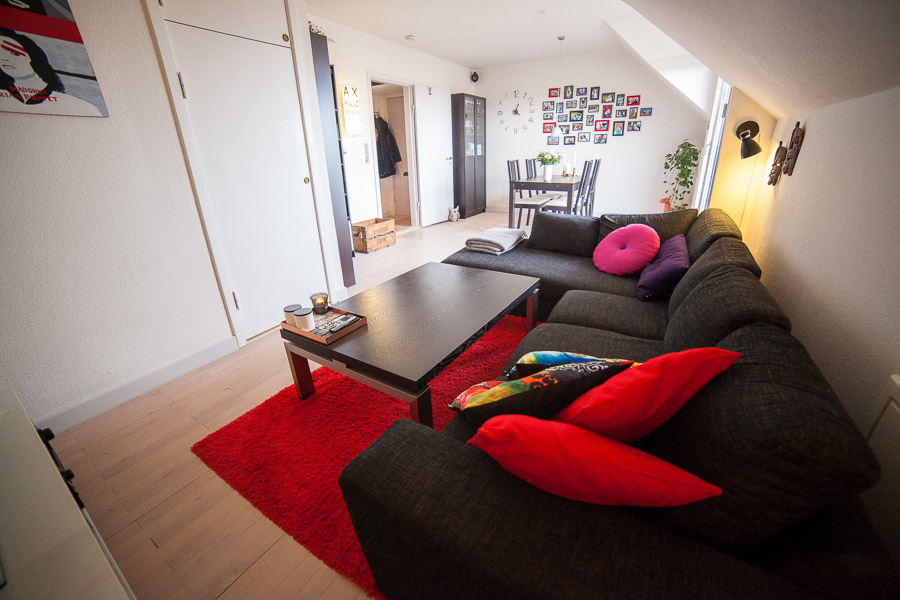
Her ses det indbyggede skab i stuen.
{kind=link}
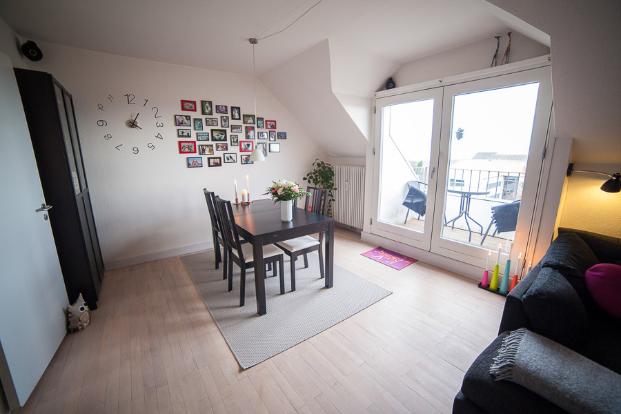
Der er også plads til spisebord med tilhørende stole (vi har haft 12 til bords uden problemer).
{kind=link}
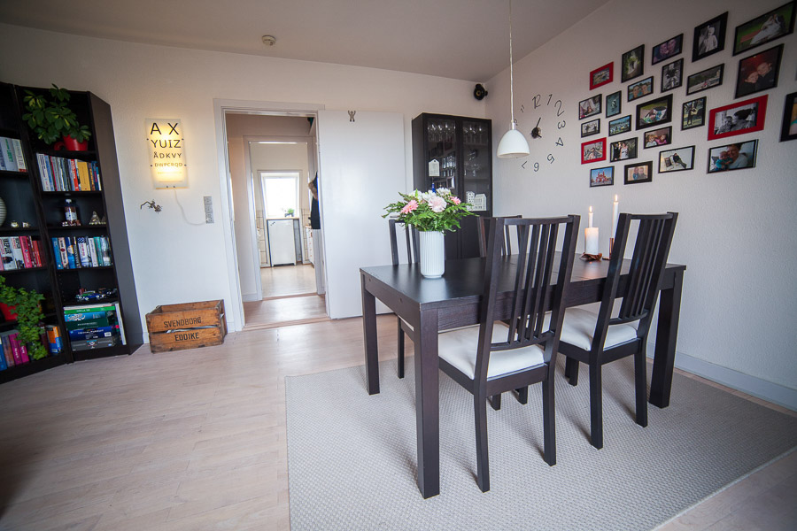
I hjørnet er der plads til et vitrineskab, og i hjørnet ses en lille højttaler så der er også trukket ledninger til surround anlæg :-)
Altan
Rosinen i pølseenden – lejlighedens perle – er altanen med den fantastiske udsigt udover byen, havnen, havet, universitet og faktisk helt til Samsø og Mols, når der er klart vejr. Der er rigelig plads til et cafebord og stole, og der kan også være et tørrestativ samtidig. Vi har tit spist morgenmaden derude om sommeren, når solen sender sine første varme stråler, og vi har også overnattet på altanen og nydt stjernehimmelen. Behøver vi sige at altanen har et fantastisk udsyn til fyrværkeri nytårsaften? Sidst sommer sleb vi gulvet på altanen, og det har blot gjort den endnu mere lækker og indbydende. Fra altanen kan man kigge ned i ejerforeningens tilhørende have, som bl.a. har to fantastisk smukke japanske kirsebærtræer. Døren til altanen kan åbnes helt op, og giver dermed god mulighed for udluftning på de varme sommerdage.
{kind=link}
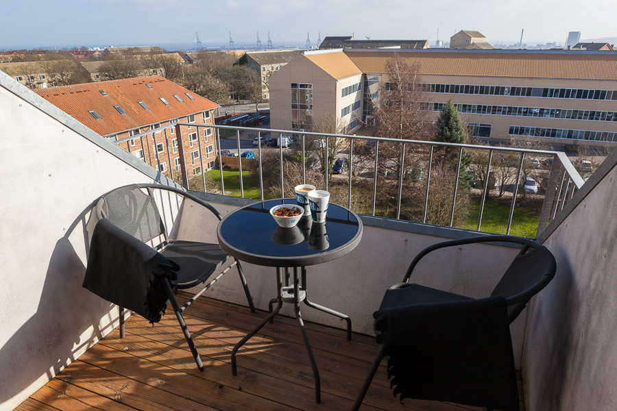
Den fantastiske altan med plads til cafebord og stole. Her er skønt at sidde med en kop kaffe og nyde solens stråler som er på altanen fra morgen til eftermiddag.
{kind=link}
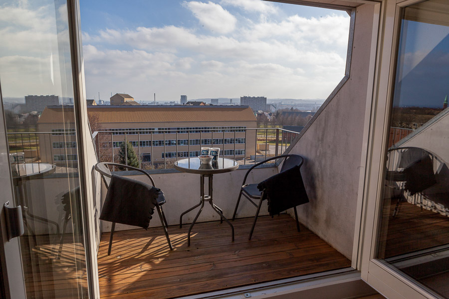
Begge døre til altanen kan åbnes, så altanen er en skøn naturlig forlængelse af stuen.
Ejerforeningen
Ejerforeningen består af tolv lejligheder og det er primært unge mennesker, der bor i opgangen. Til lejligheden hører et mindre skab i kælderen og et større kælderrum til opbevaring. I kælderen er der Miele vaskemaskine og tørretumbler til fri afbenyttelse for alle i opgangen, samt tørrerum, cykelrum og hobbyrum. Der er desuden fantastiske parkeringsforhold, så en plads til din bil bliver aldrig et problem!
Man er fælles om opgaverne i opgangen og hvert år afholdes der havedag.
Ejendommen fik skiftet vinduer, døre og tag i 2011, hvor tagetagen også blev efterisoleret. De månedlige udgifter til ejerforeningen er 1.000 kroner, og så indbetales der 500 kr. til a conto varme (vi har fået penge tilbage hvert år). Vand og el til opgang betales af ejerforeningen. Det er en sund og velfungerende ejerforening, som ikke har haft underskud i mange år.
{kind=link}
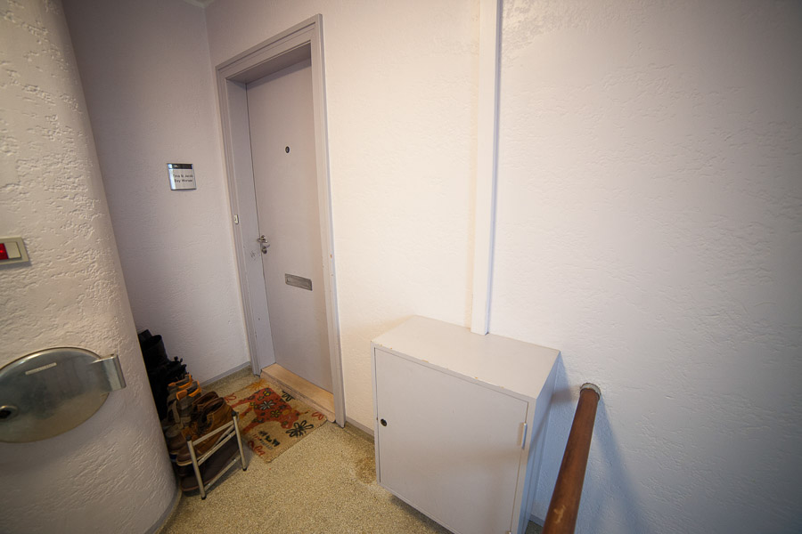
Sådan ser døren til lejligheden ud udefra.
Overtagelse og fremvisning
Forventet overtagelse mellem 15. juli og 1. august.
Plantegning
{kind=link}
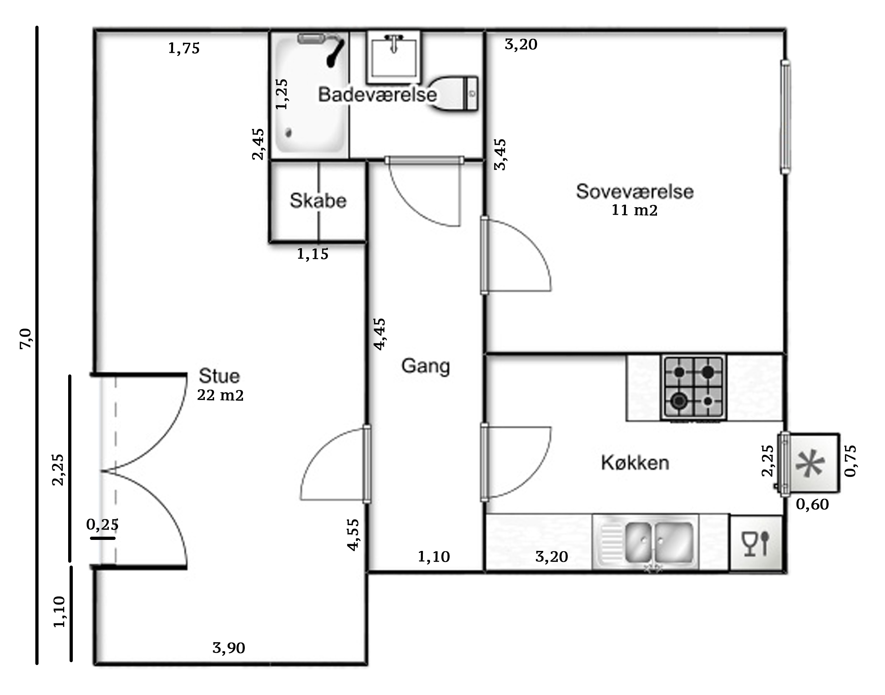
Plantegning over lejligheden.
{kind=link}
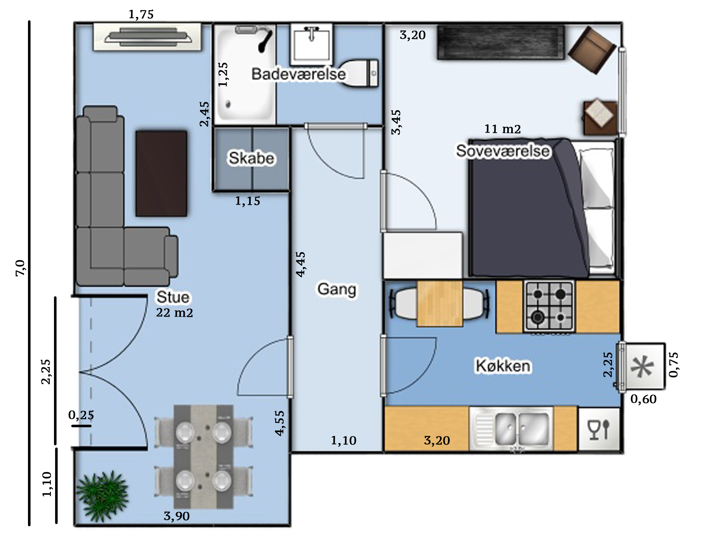
Oversigt over den aktuelle indretning af lejligheden.
Beliggenhed
FAQ - Spørgsmål og svar
Hvorfor sælger I lejligheden?
Lejligheden har været den perfekte studielejlighed, men efter 7 år er vi vokset ud af den og har brug for mere plads at boltre os på.
Hvor hurtigt kan vi overtage lejligheden?
Lejligheden kan overtages allerede 15. juli 2015.
Er den egnet som forældrekøb?
Ja, den er pt. købt som forældrekøb.
Hvordan er ejerforeningens økonomi?
Meget sund. Der er en god opsparing og alle nødvendige reperationer udføres øjeblikkeligt. Regnskaber kan sendes på mail.
Hvad med tilstandsrapport?
Det er ikke kutyme at lave tilstandsrapporter på lejligheder, men I er selvfølgelig velkomne til at tage en byggesagkyndig med når I kommer og ser lejligheden.
Kan den bruges som delelejlighed?
Lejligheden egner sig godt til at dele da begge værelse har direkte adgang til køkken og badeværelse.